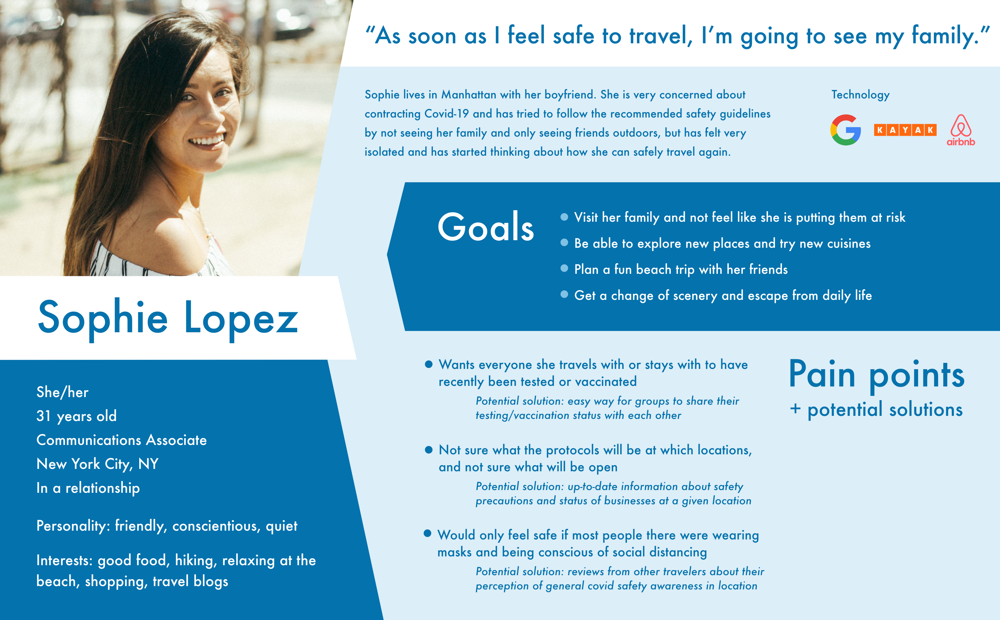
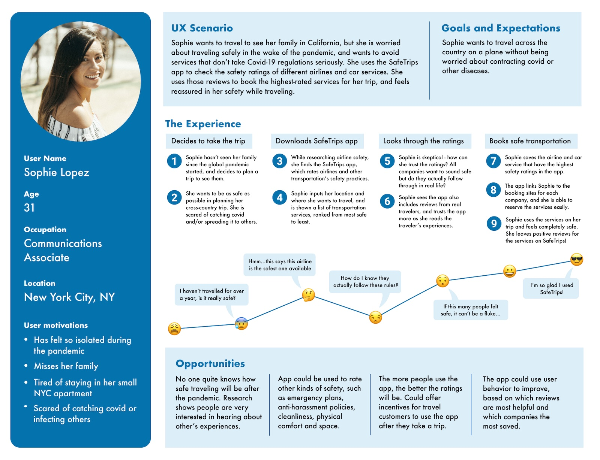
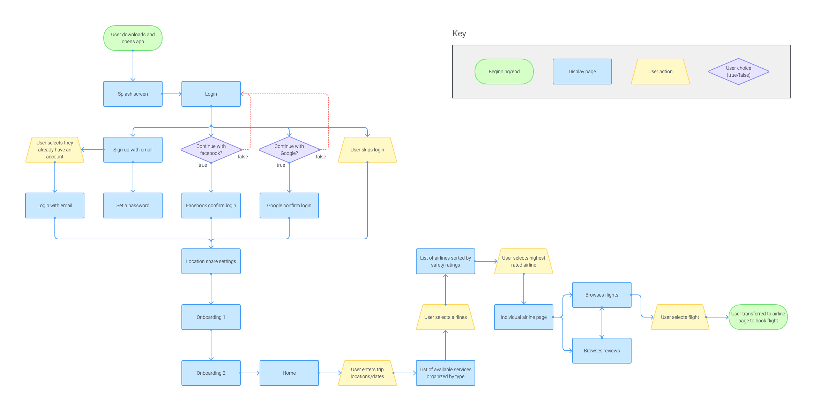

SafeTrips
A mobile app providing travelers with peer-reviewed safety information in an uncertain world.
-
My role
UX Research, UX Design, UI Design, Prototyping, User Testing -
Team
Beth Culp & Jess Davis (UX Researcher) -
Timeline
4 weeks, February - March 2021 -
Tools
Miro, Figma, Adobe XD, Flowmapp, Zoom, Otter, Google
Project Overview
The Problem
How might we give concerned travelers valid, current COVID-19 related safety information for transportation services so that we can minimize their fears of traveling during and after the pandemic?
The Solution
The SafeTrips mobile application empowers users to feel comfortable in their transportation choices by providing data-driven safety ratings of different travel services, based on both the service's safety protocols and real traveler experiences.
What I Learned
I dove head first into the user research for this project, which was an exciting challenge. I wanted to create something that spoke to our unique time in history, when the entire world was living in new circumstances due to the pandemic. This made for interesting interviews and conversations about how to approach the research with my partner. I also was new to Figma, and this project deepened my knowledge of how the functionality overlaps and differs from XD.
Design Process
Research
How have the COVID-19 pandemic restrictions affected user's travel views and habits?
Through video chat, we interviewed 5 millennials who were accustomed to traveling before the pandemic.
Interview objectives:
- What were the user’s typical travel habits before the global pandemic, including how they plan their trip?
- What actions do they consider safe or risky during the pandemic?
- What makes traveling worth it to them?
- Have they traveled during the pandemic, and what have their considerations been in doing so?
- What do they expect to be different/stay the same when the global pandemic ends?
"Right now, it seems like every airline has its own process, airports have their own process."
"It was imperative that I go on vacation. I just wore two masks and prayed for the best."
"I intentionally rented a car rather than going some other way, for safety reasons."
Key Findings
- Users are still traveling during the pandemic, but in different ways depending on individual comfort levels.
- Users are uncertain of what safety procedures are in place for different services.
- Users are accustomed to reading reviews and trusting experiences of others when making travel decisions
User Persona
Ideation
How might we help alleviate travel fears during the pandemic?
An “I like, I wish, What if” brainstorm led me to generate a lot of features to address the problem statement. From there, I mapped out these ideas in a Feature Prioritization Matrix to find which would have the most impact without being too complex. This would make an ideal Minimum Viable Product, with opportunities to expand into higher complexity items later.
Features the app would contain for MVP:
- Customer safety reviews of specific travel services
- Safety rankings of different travel services
- Official safety protocols of travel services
User Journey Map
Prototyping
How will the application interface work?
Before starting the app design, I created and iterated on a user flow. This helped me work out the key features to build out and test using the prototype, and then add in more features later.
User flow contains:
- Onboarding to the application using email, social media, or skipping registration
- Search by trip details to see what services are available, or search for a specific service/company directly
- Options for different types of travel, sorted by safety rating
- Individual service page containing reviews, safety stats, and booking
User Flow
Sketches
Mid-fidelity Prototype
User Testing
What needs to be adjusted in the prototype?
I conducted a group Guerrilla usability testing session over zoom with 4 participants, as well as in-person testing with 2 other participants, using the clickable Figma prototype on a laptop.
From there, I organized the issues into a priority matrix, accounting for both the user priorities and the effort of the change. Below, I illustrate some of the design changes that were made.
Design Iterations
Individual travel service details
Feedback:
- Individual airline page is confusing, users unsure how to find flights
- Light blue accent color is hard to see
- Users unsure what the checklist means
Modifications:
- Converted tab menu to accordion for better visual clarity
- Changed accent color to orange for better contrast
- Added explanation for safety statistics and converted from checklist to percentage
Onboarding welcome tips
Feedback:
- Users unsure where they are in the application
- Copy says enter your destination but there’s no visible field to enter it in
- Users unsure what the arrow is and if it is interactive
Modifications:
- Added dark overlay behind onboarding message to indicate this is a closable message
- Updated copy to reduce confusion
- Removed arrow and replaced with highlighted state on clickable menu
Travel options
Feedback:
- Users not sure if they are in the right place as trip details aren’t shown
- "Safest" and "fastest" tags not noticable
Modifications:
- Added the user’s trip details under heading to indicate these results are for their trip
- Changed highlight color to orange for better contrast